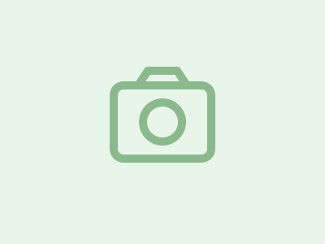

verified Registro Fotográfico Oficial zoom_in
photo_camera
schedule Custódia permanente
info
Inspeção física realizada O objeto foi catalogado e encontra-se devidamente higienizado e armazenado em armário fechado da sala de coordenação.
label
Categoria
location_on
Local no campus
calendar_today
Data do ocorrido
person
Cadastrado por
apartment
Local de retirada / custódia física
Central de Achados e Perdidos
Bloco Central, Sala 104 • Horário de atendimento: 08h às 18h
verified_user
Instrução para retirada: Para retirar o item, apresente documento com foto e comprove posse (ou características específicas) na Sala 104.